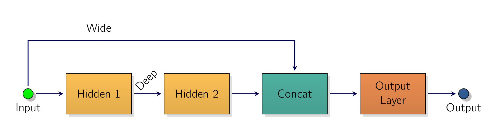
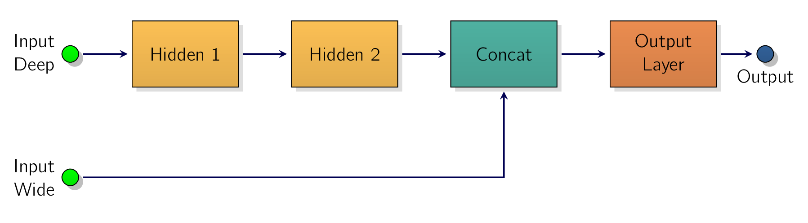
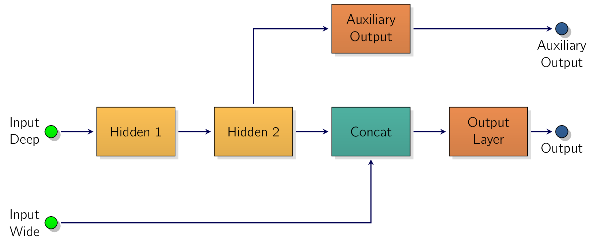

One example of a nonsequential NNNeural NetworksNeural Networks is a Wide & Deep NNNeural NetworksNeural Networks. This neural network architecture was introduced in a 2016 paper by Heng-Tze Cheng et al [†-1] Cheng, H.-T. et al. Wide and deep learning for recommender systems in Proceedings of the 1st workshop on deep learning for recommender systems (2016), 7–10. It connects all or part of the inputs directly to the output layer, as shown in Fig. 2.1 This architecture makes it possible for the NNNeural NetworksNeural Networks to learn both deep patterns, using the deep path, and simple rules, through the short path. The short path can also be used to provide manually engineered features to the NNNeural NetworksNeural Networks. In contrast, a regular MLPMulti-layer PerceptronsMulti-layer Perceptrons forces all the data to flow through the full stack of layers.
Simple patterns in the data may end up being distorted by this sequence of transformations.

Let’s build such a NNNeural NetworksNeural Networks to tackle the California housing dataset. As this wide and deep architecture is nonsequential, we have to create a custom module. It’s easier than it sounds:
torch.nn.Module , then create all the layers you need in the constructor,
[82]
after calling the base class’s __init__() method. and define how these layers should be used by the module in the forward()
method: python
We can use any kind of module inside our custom module. In this example, we use an nn.Sequential module to build
the deep part of our model. [83]
It’s actually not that deep as this is just a toy example. It’s the same
MLPMulti-layer PerceptronsMulti-layer Perceptrons as earlier, except we separated the
output layer because we need to feed it the concatenation of the model’s inputs and the deep
part’s outputs. For this same reason, the output layer now has 40 + n_features inputs instead of just
40.
In the forward() method, we just feed the input X to the deep stack, concatenate the input and the deep stack’s
output, and feed the result to the output layer.
Modules have a children() method which returns an iterator over the module’s submodules non-recursively. There’s also a named_children()
method. If our model has a variable number of submodules, we should store them in an nn.ModuleList or an nn.ModuleDict , which
are returned by the children() and named_children() methods. [84]
as opposed to regular Python lists and dicts. Similarly, if our
model has a variable number of parameters, we should store them in an nn.ParameterList or an nn.ParameterDict to ensure they are
returned by the paramters() and named_parameters() methods.
Now we can create an instance of our custom module, move it to the GPUGraphical Processing UnitA specialized electronic chip designed to rapidly render images, video, and 3D animations. Unlike a central processing unit (CPU) that processes tasks sequentially, a GPU uses parallel processing with thousands of smaller cores to handle many calculations at the same time., train it, evaluate it, and use it exactly like our previous models:
python
But what if we want to send a subset of the features through the wide path and a different subset, possibly overlapping, through the deep path, as shown in Fig. 2.2?
In this case, one approach is to split the inputs inside the forward() method, for example:
python
This works fine; however, in many cases it’s preferable to just let the model take two separate tensors as input. Let’s see why and how.

Some models require multiple inputs that cannot easily be combined into a single tensor. For example,
the inputs may have a different number of dimensions. [85]
i.e., when we want to feed both images
and text to the NNNeural NetworksNeural Networks. To make our Wide & Deep model,
take two separate inputs, as shown in Fig. 2.2, we must start by changing the model’s forward()
method:
python
Next, we need to create datasets that return the wide and deep inputs separately:
python
Since the data loaders now return three tensors instead of two at each iteration, we need to update the main loop in the evaluation and training functions:
python
Alternatively, since the order of the inputs matches the order of the forward() method’s arguments, we can
use Python’s ∗ operator to unpack all the inputs returned by the data_loader and pass them to the
model.
The advantage of this implementation is that it will work with models that take any number of inputs, not just two, as long as the order is correct.
python
When our model has many inputs, it’s easy to make a mistake and mix up the order of the inputs, which can lead to hard-to-debug issues. To avoid this, it can be a good idea to name each input.
For this, you can define a custom dataset that returns a dictionary from input names to input values, like this:
python
Then create the datasets and data loaders:
python
Once again, we also need to update the main loop in the evaluation and training functions:
python
Alternatively, since all the input names match the forward() method’s argument names, we can use Python’s **
operator to unpack all the tensors in the inputs dictionary and pass them as named arguments to the
model: y_pred = model(**inputs) .
Now that we know how to build sequential and nonsequential models with one or more inputs, let’s look at models with multiple outputs.
There are many use cases where you may need a NNNeural NetworksNeural Networks with multiple outputs:
-
The task may demand it. For instance, we may want to locate and classify the main object in a picture: a regression task and a classification task.
-
Similarly, we may have multiple independent tasks based on the same data. Sure, we could train one NNNeural NetworksNeural Networks per task, but in many cases we will get better results on all tasks by training a single NNNeural NetworksNeural Networks with one output per task. This is because the NNNeural NetworksNeural Networks can learn features in the data that are useful across tasks.
For example, we could perform multitask classification on pictures of faces, using one output to classify the person’s facial expression [86] smiling, surprised, etc. and another output to identify whether they are wearing glasses or not. -
Another use case is regularization. [87] i.e., a training constraint whose objective is to reduce overfitting and thus improve the model’s ability to generalize
For example, you may want to add an auxiliary output in a NNNeural NetworksNeural Networks architecture, shown in Fig. 2.3, to ensure that the underlying part of the network learns something useful on its own, without relying on the rest of the network.

Let’s add an auxiliary output to our Wide & Deep model to ensure the deep part can make good
predictions on its own. Since the deep stack’s output dimension is 40, and the targets have a single
dimension, we must add an nn.Linear layer for the auxiliary output to go from 40 dimensions down to
1.
We also need to make the forward() method compute the auxiliary output, and return both the main output
and the auxiliary output:
python
Next, we need to update the main loop in the training function:
python
Notice that the model now returns both the main predictions y_pred and the auxiliary predictions y_pred_aux
.
In this example, we can use the same targets and the same loss function to compute the main output’s loss and the auxiliary output’s loss. In other cases, we may have different targets and loss functions for each output, in which case you would need to create a custom dataset to return all the necessary targets.
Once we have a loss for each output, we must combine them into a single loss that will be minimized by gradient descent. In general, this final loss is just a weighted sum of all the output losses.
In this example, we use a higher weight for the main loss (0.8), because that’s what we care about the most, and a lower weight for the auxiliary loss (0.2).
This ratio is a regularization hyperparameter that we can tune.
We also need to update the main loop in the evaluation function. However, in this case we can just ignore the auxiliary output, since we only really care about the main outputthe auxiliary output is just there for regularization during training:
python
We can now build and train all sorts of NNNeural NetworksNeural Networks architectures, combining predefined modules and custom modules in any way you please, and with any number of inputs and outputs. The flexibility of NNNeural NetworksNeural Networkss is one of their main qualities. But so far we have only tackled a regression task, so let’s now turn to classification.
-
¶
- GPUGraphical Processing Unit
A specialized electronic chip designed to rapidly render images, video, and 3D animations. Unlike a central processing unit (CPU) that processes tasks sequentially, a GPU uses parallel processing with thousands of smaller cores to handle many calculations at the same time.
-
¶
- MLPMulti-layer Perceptrons
Multi-layer Perceptrons
-
¶
- NNNeural Networks
Neural Networks
- 1.
- Cheng, H.-T. et al. Wide and deep learning for recommender systems in Proceedings of the 1st workshop on deep learning for recommender systems (2016), 7–10